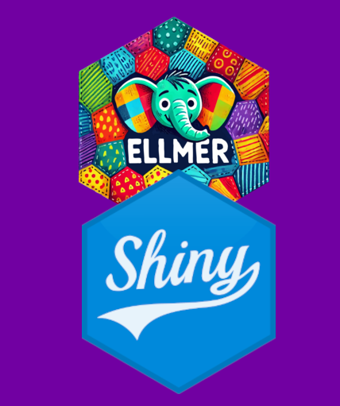
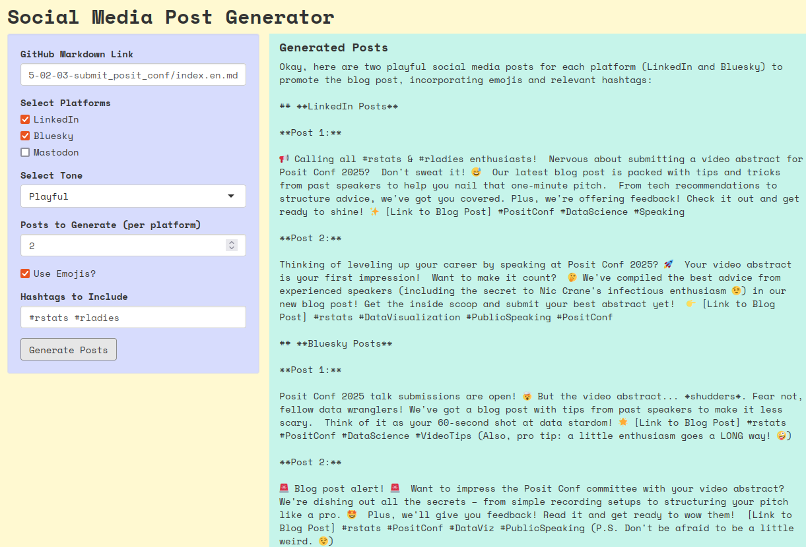
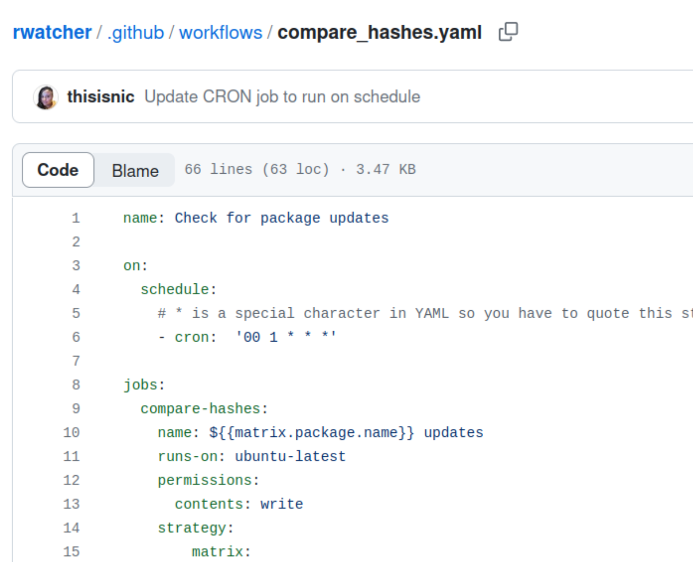
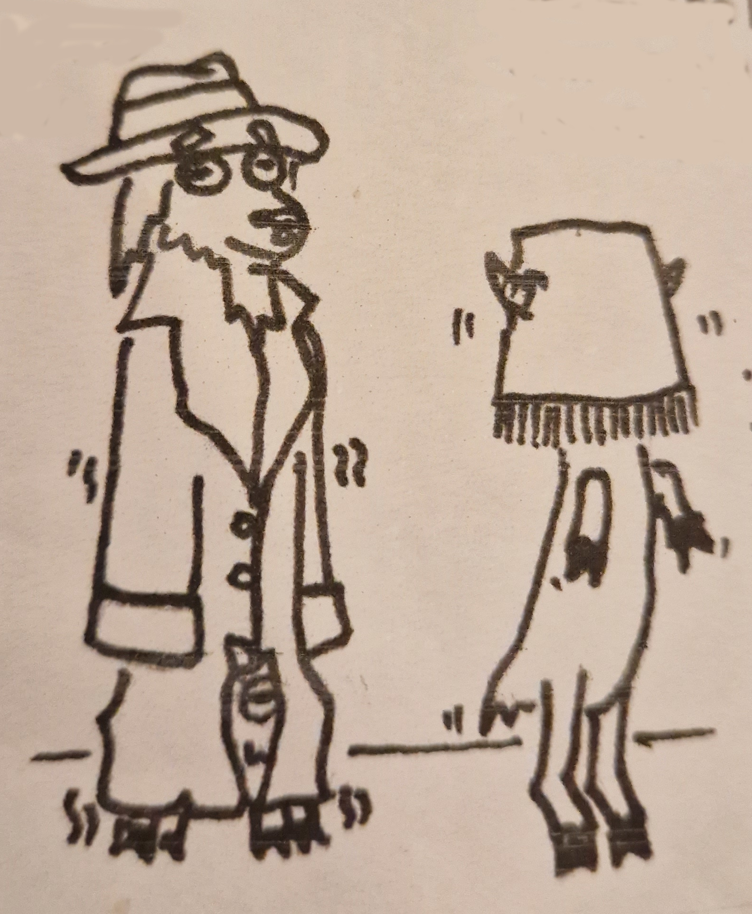
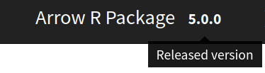
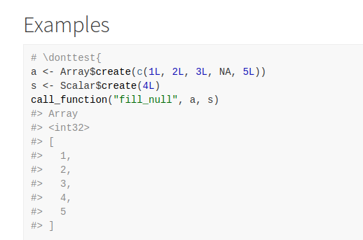
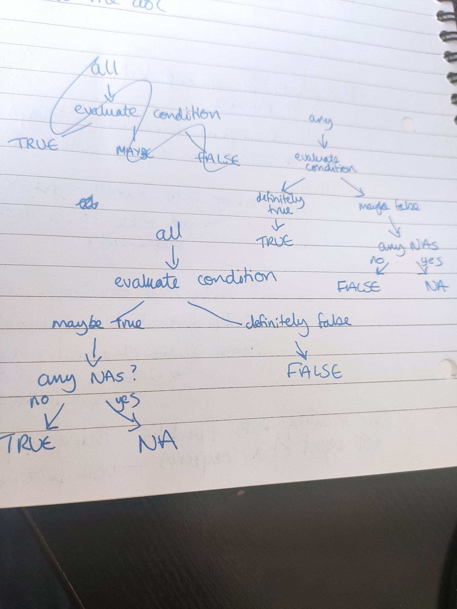
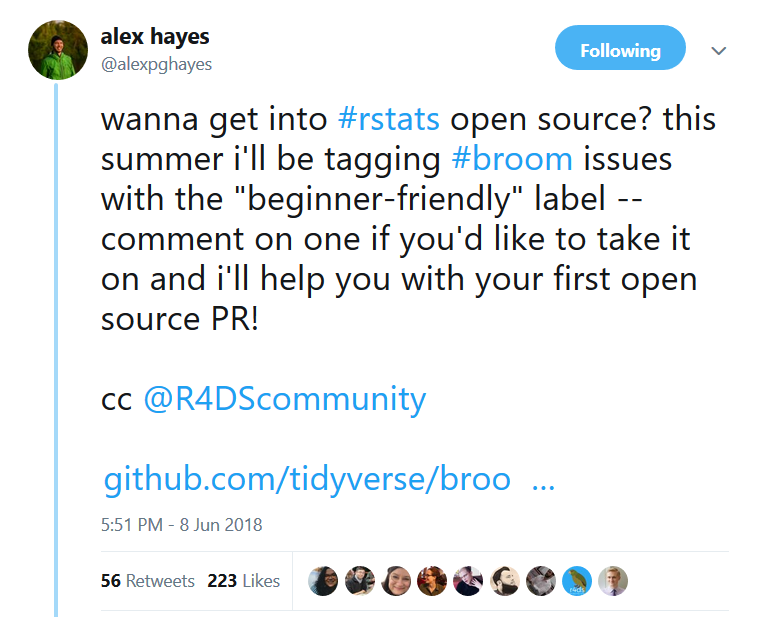
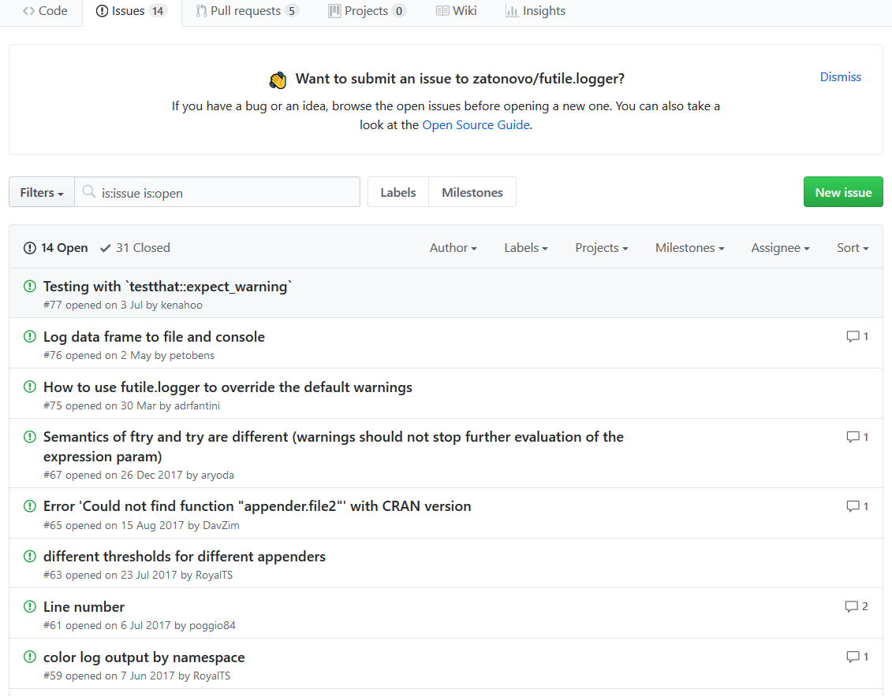
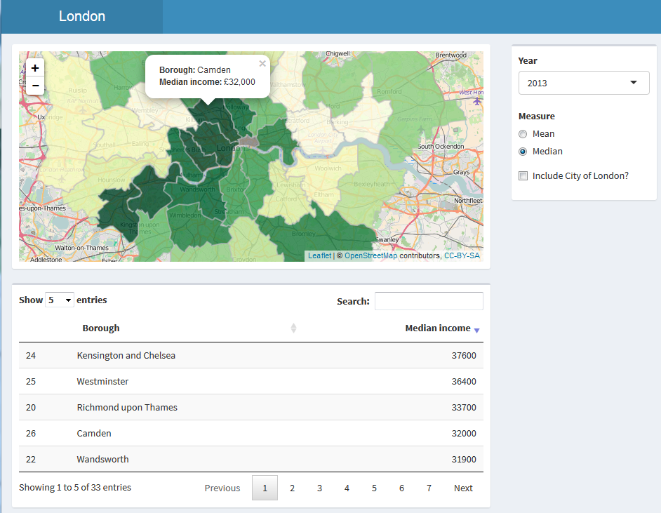

Home
About
Workshops
Past Work
Talks
Blog
Blog
Categories
All
(22)
AI
(4)
Arrow
(4)
Career
(2)
GitHub Actions
(1)
Python
(1)
R
(21)
Shiny
(2)
AI Tooling and Open Source
AI
As one of the maintainers of Apache Arrow, lately I’ve been noticing an increase in AI-generated pull requests. In this blog post, I discuss how AI tooling affects open…
Jan 27, 2026
Nic Crane
Using ChatGPT as a Code Tutor: A One-Hour Learning Experiment
R
AI
There’s a lot of advice out there at the moment about using LLMs for code generation, but something I’ve been curious about is using LLMs for learning
around
code.
Aug 3, 2025
Nic Crane

Iterating on an app to create social media posts generating package using {shiny} and {ellmer}
R
AI
I recently posted about a repo I created containing a Shiny app which allows users to generate social media posts to promote blog posts, using {shiny} and {ellmer}.
Feb 17, 2025
Nic Crane

Generating social media posts to promote blog posts with {shiny} and {ellmer}
R
AI
Writing blog posts is fun, but the next step, getting people to actually read them, can be trickier. I wanted to promote a recent blog post I co-authored for R-Ladies, but…
Feb 14, 2025
Nic Crane

Monitoring R Package Updates with Github Actions
R
GitHub Actions
As maintainer of the Arrow R package, there are a few packages I want to keep up to date with, so I can make sure that our bindings continue to be compatible with the latest…
Dec 28, 2023
Nic Crane
Debugging
R
As a package maintainer, I’m a little disappointed when folks mention Arrow bugs they’re aware of but haven’t reported. Not disappointed with the individual in question, but…
Oct 4, 2023
Nic Crane

Three Goats in a Raincoat
R
I am not a fan of the term “imposter syndrome.” It’s a lazy way of ignoring the complex and interconnected, often structural reasons that contribute to many people’s…
Oct 3, 2023
Nic Crane
Type inference in readr and arrow
R
Arrow
The CSV format is widely used in data science, and at its best works well as a simple human-readable format that is widely known and understood. The simplicity of CSVs…
Nov 21, 2022
Nic Crane
Arrow New Feature Showcase:
show_exec_plan()
R
Arrow
The
arrow
package allows you to take advantage of the power of the Acero execution engine for data manipulation and analysis. The code in
arrow
provides bindings to
dplyr
ver…
Aug 26, 2022
Nic Crane

Customising pkgdown with a version selector
R
One of the things I’ve been working on lately is implementing a version selector for the Arrow pkgdown site, so that users can browse to previous versions of the…
Apr 15, 2022
Nic Crane
Error chaining
R
In this post, I’m going to talk about error chaining - overriding default error messages to add further hints for a user. I had a need to learn this while working on Arrow…
Apr 9, 2022
Nic Crane
Open Source Developer Apprenticeship - 9 months in
R
Arrow
Career
I’ve been meaning to blog for ages but have been so wrapped up in project things and getting nerd-sniped. Here’s a bit about the last six months.
Jan 23, 2022
Nic Crane

R package documentation - what makes a good example?
R
Python
I’m currently working on adding to the documentation of the arrow R package, and I’ve started thinking about the qualities of good examples. Specifically, I’m referring to…
May 18, 2021
Nic Crane
R package documentation - what makes a good example?
R
I’m currently working on adding to the documentation of the arrow R package, and I’ve started thinking about the qualities of good examples. Specifically, I’m referring to…
May 18, 2021
Nic Crane
My First Month at Ursa Computing
R
Arrow
Career
I’ve now been working at Ursa Computing on Apache Arrow for just over a month, and thought it would be a good time to write a blog post about my experiences over the past…
May 13, 2021
Nic Crane
Why is eval parse bad?
R
I was writing Arrow bindings for
na.omit
and needed a way of applying
is.na
to every column of a table at once. I’d originally implemented using
dplyr::filter
, but had…
Apr 20, 2021
Nic Crane

Three Valued Logic
R
This week I was writing Arrow bindings for some R functions and came across a concept that was new to me: three-valued logic.
Apr 17, 2021
Nic Crane

Ten Steps to Becoming a Tidyverse Contributor
R
This year has been a crazy whirlwind for me – I moved job once, moved house 3 times, co-authored a course on Data Camp, got invited by a former colleague to assist with a…
Nov 28, 2018
Nic Crane
Scraping rstudio::conf 2018 Abstracts
R
RStudio Conference 2019 takes place in January 2019, and this week RStudio put out a call for contributed talks and e-posters. Though I was eager to browse previous years’…
Aug 22, 2018
Nic Crane

Comparing R packages using packagemetrics
R
A colleague asked for my opinion on 2 packages;
loggit
and
futile.logger
. Whilst I have used
futile.logger
before, I hadn’t used
loggit
and so used the metrics of the…
Jul 31, 2018
Nic Crane
Pop-up to confirm action in Shiny
R
Shiny
It’s a gorgeous evening in Bath tonight, and my evening has been improved by finding a free table outside at the pub, a large glass of Sauvignon Blanc, and working out how…
Aug 16, 2016
Nic Crane

Getting started with Leaflet in Shiny - interactive map apps
R
Shiny
Lately I’ve been enjoying learning how to use Shiny, and experimenting with making a fairly basic app, and wanted to develop my skills further. I’d been looking at an…
Apr 28, 2016
Nic Crane
No matching items